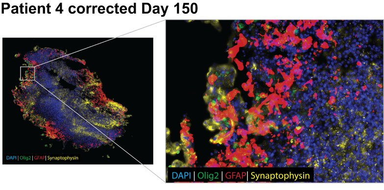
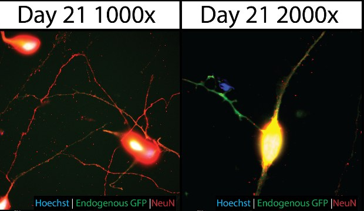
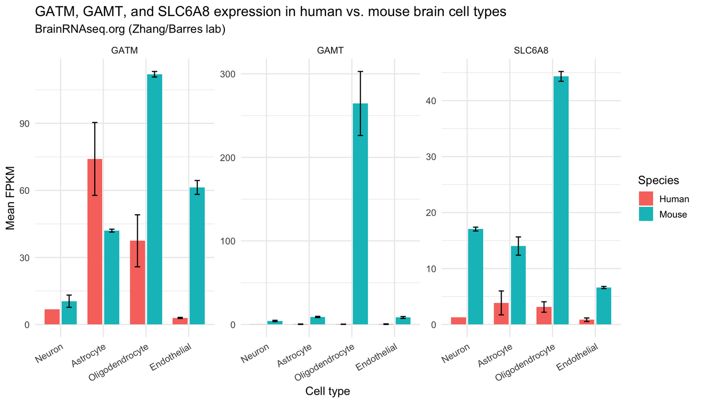
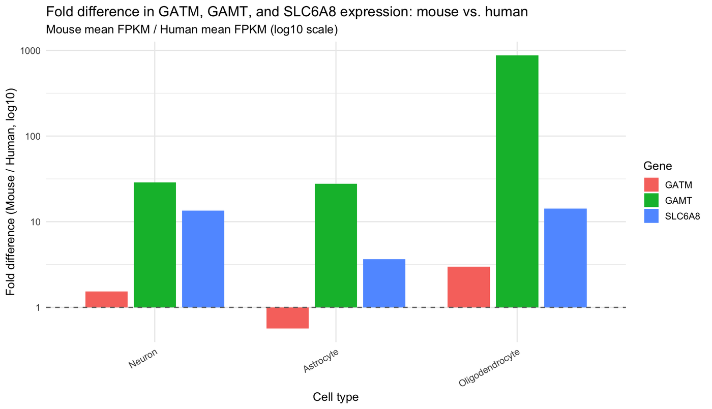

iPSCs · NGN2 neurons · Cerebral organoids · Creatine metabolism
Modeling creatine deficiency in the developing human brain.
Guanidinoacetate N-methyltransferase (GAMT) catalyzes the final step of creatine biosynthesis. Loss-of-function variants cause a neurodevelopmental disorder marked by intellectual disability, epilepsy and developmental delay. I use patient-derived and CRISPR-edited iPSCs, cortical neurons and cerebral organoids to define how creatine deficiency alters human brain development.
To our knowledge, the first human iPSC-derived neuron model of GAMT deficiency.
Creatine biosynthesis: GATM and GAMT
Interactive schematicC₃H₇N₃O₂
C₄H₉N₃O₂
Schematic of pathway logic, not experimental data. Arrow width scales with relative flux and bar length with relative level.
Research
Three models of GAMT deficiency
Neurologic injury in GAMT deficiency is irreversible once symptoms begin, and current treatment with creatine, L-ornithine and sodium benzoate cannot reverse established damage. These models test how creatine deficiency disrupts human neurodevelopment, and whether earlier intervention could prevent it.

Organoids
Cerebral organoids
Patient-derived and CRISPR-edited iPSCs are patterned into cerebral organoids that follow early human cortical development. GAMT-deficient organoids show delayed neuronal maturation, few mature high-energy neurons, and altered stem cell proliferation.

Neurons
Cortical neurons from a GAMT knockout line
A CRISPR GAMT knockout iPSC line shows marked suppression of the creatine pathway and downstream metabolism, partially rescued by 72 hours of creatine supplementation. NGN2-induced cortical neurons from this line are delayed in maturation. To our knowledge, this is the first human iPSC-to-neuron model of GAMT deficiency.
Metabolism
Creatine and guanidinoacetate
GAMT transfers a methyl group from S-adenosylmethionine to GAA to form creatine. Loss of function depletes creatine and causes GAA to accumulate. The work compares how each metabolite affects iPSC proliferation and neuronal maturation, with and without a functional pathway.
Maturation
GAMT-deficient neurons mature late
After NGN2 induction, iPSC-derived neurons extend neurites and branch as they mature. Neurons lacking GAMT are delayed. Drag the day to compare the two side by side.
Days after induction
Interactive schematicSchematic of a delay, not measured data. The size of the delay shown here is illustrative.
Species divergence
Mouse and human brains express creatine genes very differently
Most mechanistic work on creatine metabolism comes from mice. Public RNA-seq data from purified brain cell types show that GATM (AGAT, step 1), GAMT (step 2) and SLC6A8 (the creatine transporter) are expressed at very different levels in mouse and human, which limits how directly mouse findings transfer to human neurodevelopment.
Mean expression by brain cell type
Mouse GAMT expression is about 28-fold higher than human in neurons and about 870-fold higher in oligodendrocytes.
Source: BrainRNAseq.org (Zhang/Barres lab). Values were read from the source figures and rounded, so treat them as approximate. Fold difference is mouse mean FPKM divided by human mean FPKM.
Data table and original figures


Method
From a stem cell to a readout
Patient-derived human induced pluripotent stem cells, and lines edited by CRISPR to remove GAMT.
Cortical neurons by doxycycline-inducible NGN2 expression, and cerebral organoids that follow early cortical development.
Creatine and GAA at defined doses, alongside untreated controls for every genotype.
Transcriptomics, metabolite profiling, and high-content imaging of soma and neurite outgrowth.
Automation
Robots feed the cells, software reads the images
My cultures run on a CellXpress.ai automated cell culture system from Molecular Devices, and its images feed directly into IN Carta for analysis. Every plate receives the same handling on the same schedule, which removes operator variability from the measurements.
96-well plates laid out by genotype and treatment, with untreated controls for each.
Automated feeding, passaging and imaging on a fixed schedule for iPSCs, neurons and organoids.
Segmentation models trained on my own annotations trace neuronal soma and neurite outgrowth in every image.
Per-well measurements ready to compare across genotype, treatment and day.
Automation is what makes the maturation question quantifiable. Thousands of images across many days and conditions are processed identically, so a developmental delay appears as a pattern in the numbers.
Talks
Presenting creatine deficiency research
A recorded conference talk, and the meetings and symposia where this work has been presented.
From the session “Models of Cerebral Creatine Deficiencies”. The player loads from YouTube when you press play.
- Cerebral Creatine Deficiency Syndromes Conference2026
- Molecular and Medical Pharmacology Pharm Friday2026
- Virtual Cerebral Creatine Deficiency Syndromes Conference2025
- Molecular and Medical Pharmacology Department Retreat2024
- Cerebral Creatine Deficiency Syndrome Scientific and patient symposium2024
- UCLA Semel Institute Stem Cell Research Symposium2022
Publications
Papers, talks and citations
The full list, with citation counts, lives on Google Scholar.
External link
Google Scholar profile
Published work on stem cells, neurons and creatine-related disorders.
Contact
Working on creatine disorders? Let’s talk.
Questions, corrections, collaboration ideas and requests to visit the lab are all welcome.
abogonie@g.UCLA.edu